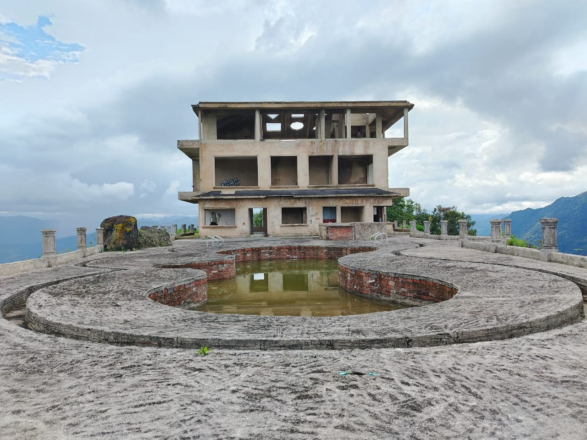

Ecoturismo Sostenible
Conecta con la naturaleza y apoya a las comunidades locales

Cascadas de Palo Blanco
Un paraíso natural escondido entre montañas, perfecto para el turismo de aventura y relajación.
Senderismo
Fotografía
Relajación

Pico Yanacá
Mirador natural que ofrece vistas panorámicas de la región y avistamiento de fauna nativa.
Montañismo
Avistamiento
Panorámicas

Río Minero y Vega del Tigre
Espacios ideales para actividades acuáticas y conexión con la historia minera de la región.
Pesca
Historia
Naturaleza

la casa del aire
Espacios ideales para actividades acuáticas y conexión con la historia minera de la región.
senderismo
Historia
Naturaleza